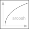

acoshInverse of cosh (area hyperbolic cosine) |

|
Information
This information is part of the Modelica Standard Library maintained by the Modelica Association.
This function returns the area hyperbolic cosine of its input argument u. The valid range of u is
+1 ≤ u < +∞
If the function is called with u < 1, an error occurs. The function cosh(u) has two inverse functions (the curve looks similar to a sqrt(..) function). acosh(..) returns the inverse that is positive. At u=1, the derivative dy/du is infinite. Therefore, this function should not be used in a model, if u can become close to 1:

Syntax
y = acosh(u)
Inputs (1)
| u |
Type: Real Description: Independent variable |
|---|
Outputs (1)
| y |
Type: Real Description: Dependent variable y=acosh(u) |
|---|